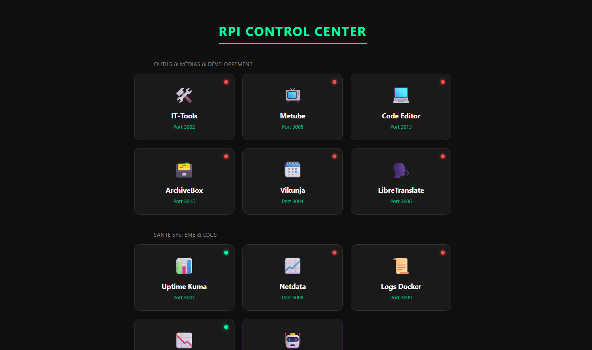

Raspberry Pi
C'est mon projet actuel le plus complet. Au début, je voulais juste une petite machine pour faire tourner des bots Discord H24. Finalement, je l'ai poussé beaucoup plus loin :
- Accès distant : J'utilise Tailscale pour me connecter au Raspberry depuis n'importe où (téléphone, PC portable) de façon sécurisée.
- Auto-hébergement : J'ai configuré un tunnel pour obtenir une URL publique. Ça me permet d'héberger moi-même mes sites, dont ce portfolio, sans avoir à toucher aux ports de ma box internet.
- Cloud personnel : J'ai installé FileBrowser pour gérer mes fichiers. Ça me sert de drive perso pour transférer des gros fichiers (plusieurs dizaines de Go) gratuitement et sans limites.
- Services : J'y ai aussi ajouté plusieurs outils pratiques au quotidien, comme un calendrier synchronisé et un traducteur local.
